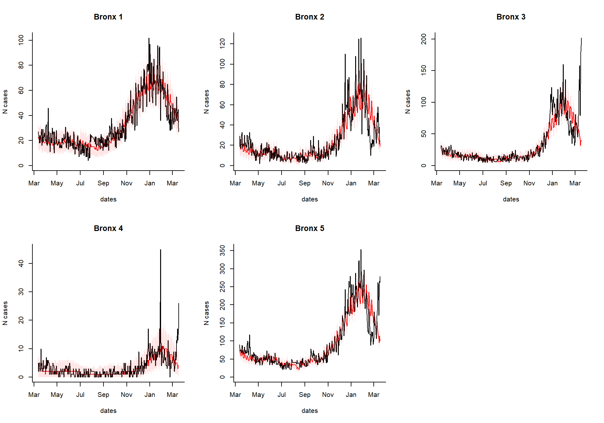
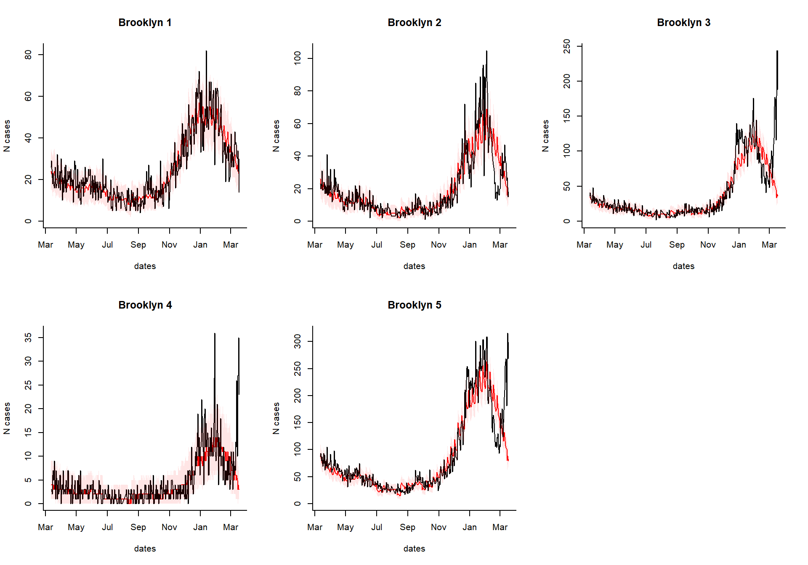
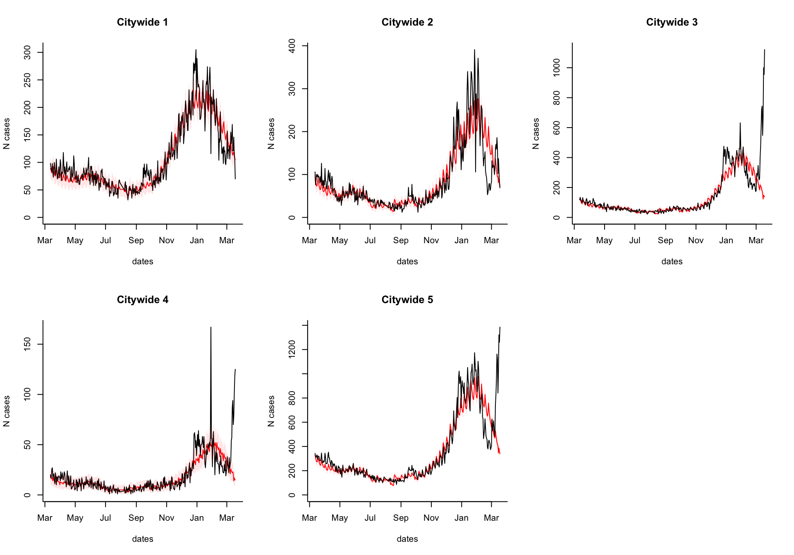
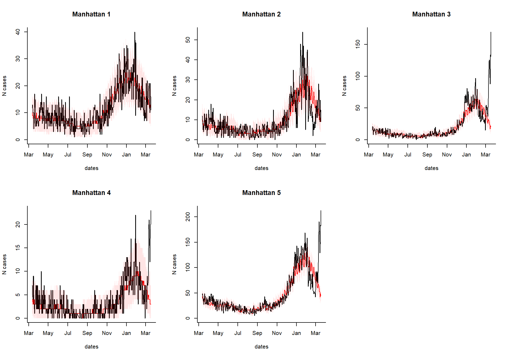
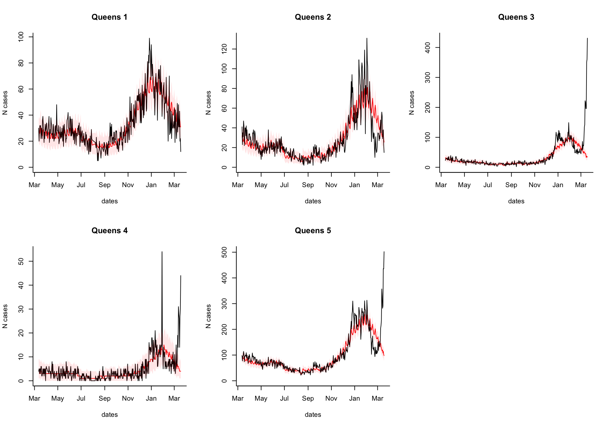
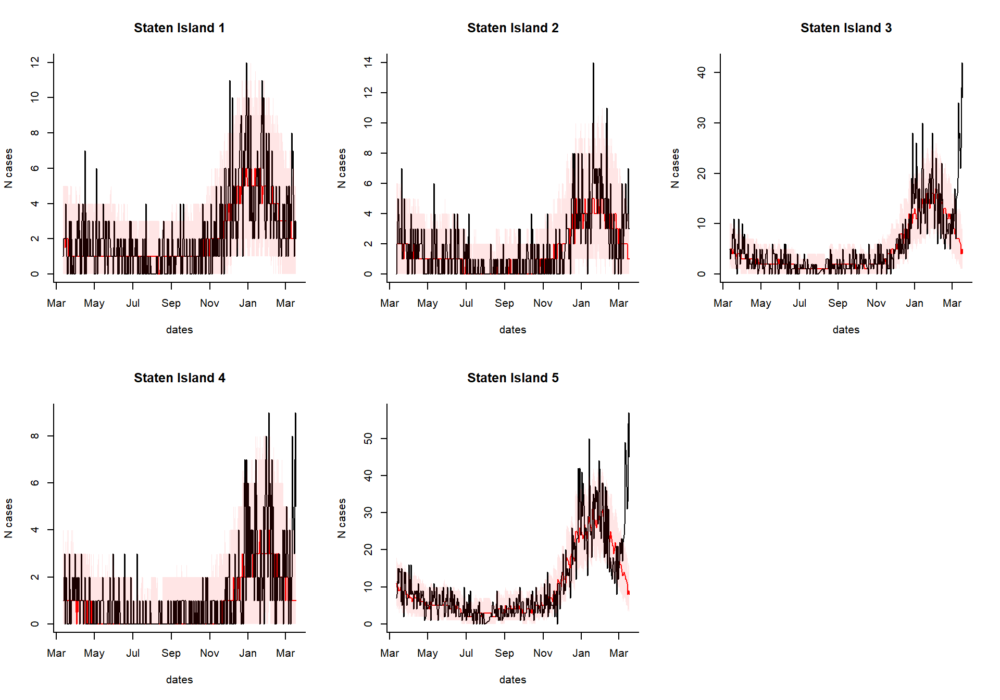

ESSENCE.RmdThe goal for this package is to facilitate the formatting of line list data from syndromic surveillance datasets (such as those stored in ESSENCE into daily or weekly time series, and then analyzing these data to detect increases above the seasonal baseline. For US data, there is an option to automatically adjust the data for state-specific flu activity (using data from NREVSS and/or state-specific RSV activity (based on Google search volume).
In this example, we will demonstrate how to prepare the data obtained from ESSENCE to be used with this package and then how to run the analyses. Thanks to Sara Chronister from Maricopa County, AZ for contributing to this workflow.
This package is not available on CRAN, so it needs to be installed directly from Github. Make sure you have the ‘devtools’ package installed.
# Install development version from GitHub
library(devtools)
devtools::install_github("weinbergerlab/ExcessILI")library(ExcessILI) library(cdcfluview) #> Warning: package 'cdcfluview' was built under R version 3.6.3
We recommend installing the cdcfluview package to take full advantage of the ExcessILI package. If you are using the Enterpise version of RStudio on the BioSense platform, cdcfluview might not install correctly.
cdcfluview’s dependencies require the packages gdal and udunits, which cannot be installed using R’s package manager. If cdcfluview installation fails for this reason, you’ll need to install these by hand. For installation of these two packages on OS X, we recommend using a package manager such as brew.
brew install gdal udunits
We ultimately want to have a dataset that looks like this, where we have a line for each case, a column for the state (2 digit state), a column for smaller geographic levels if any (e.g., counties, hospitals), a column for the age group, the day of admissions (in a YYY-MM-DD date format), and flags for whether the admission was related to a syndrome of interest, such as “ILI” or “respiratory”. You should have a row in your data for every admission, regardless of the cause.
head(ds1) #> state adate agegrp ili resp borough #> 1 NY 2020-05-12 v. 65+y 0 0 Manhattan #> 2 NY 2020-03-04 v. 65+y 1 0 Manhattan #> 3 NY 2019-12-25 v. 65+y 0 0 Manhattan #> 4 NY 2019-01-28 ii. 5-17y 0 0 Manhattan #> 5 NY 2019-06-02 v. 65+y 0 0 Manhattan #> 6 NY 2019-11-25 ii. 5-17y 0 0 Manhattan
We can aggregate by day or week using the function ts_format()
ts1
head(ts1[,c('agegrp','adate','state','borough', 'ili', 'resp', 'all.visits')])
#> agegrp adate state borough ili resp all.visits
#> 1 i. u5y 2019-01-01 NY Bronx 0 4 41
#> 2 i. u5y 2019-01-01 NY Manhattan 0 2 17
#> 3 i. u5y 2019-01-02 NY Bronx 3 2 55
#> 4 i. u5y 2019-01-02 NY Manhattan 2 1 20
#> 5 i. u5y 2019-01-03 NY Bronx 0 2 48
#> 6 i. u5y 2019-01-03 NY Manhattan 2 1 17As an example of how to prepare line list data to be used in the ts_format function, starting from ESSENCE data, here is code from Sara Chronister:
ds1 %
# extract date only from C_Visit_Date_Time
mutate(Visit_Date = as.Date(C_Visit_Date_Time),
# fill in missing HasBeenI with 0
ifelse(is.na(HasBeenI),0,HasBeenI),
# concatenate all _flat variables into one classification variable
classification = paste(Category_flat,SubCategory_flat,CCDDCategory_flat,sep=";"),
# flag for COVID-like illness
COVIDlike = ifelse(str_detect(CCDDCategory_flat,"Fever and Cough-Sob-DiffBr neg Influenza DD v1"),1,0),
# flag for influenza-like illness
ili = ifelse(str_detect(CCDDCategory_flat,"ILI CCDD v1"),1,0),
# flag for cough
cough = ifelse(str_detect(SubCategory_flat,"Cough"),1,0),
# flag for respiratory
resp = ifelse(str_detect(Category_flat,"Resp"),1,0),
# age groups
Age = as.numeric(Age),
agegrp = case_when(Age>=0 & Age<20~"00-19Y",
Age>=20 & Age<45~"20-44Y",
Age>=45 & Age<65~"45-64Y",
Age>=65 & Age<150~"65+Y"),
agegrp = ifelse(is.na(agegrp),"UNK",agegrp),
# state variable (for use when multiple counties are pulled in)
state = 'AZ',
county = str_remove(HospitalRegion,"AZ_"),
ALL = "ALL") %>%
filter(agegrp!="UNK")Now that we have the formatted time series, we are ready to run the analysis. You can either just fit a seasonal baseline with harmonic waves (default), or you can adjust for influenza activity. If you were able to install the cdcfluview package and have data from the US, you can automatically adjust for influenza activity using data on influenza positive tests from NREVSS. If not, you can merge in your own influenza data with the time series formatted in the steps above, and specify the name of the flu variable.
We need to specify the names of the relevant variables in the dataset ds1. We will fit the regression through the end of Feb 2020 and then extrapolate forward based on the seasonal baseline and observed flu activity. We adjust for flu using the ‘auto’ option, which will download the latest NREVSS testing data
excess_cases1 Warning in data(cdcfluview::hhs_regions): data set #> 'cdcfluview::hhs_regions' not found
You can take the results of the excessCases function and generate an interactive dashboard by running the following line. This is especially useful if you have a lot of regions, age groups, and syndromes to explore. You can also view the time series of raw cases, the proportion, or the observed/expected.
dashboardPlot(excess_cases1)
Which syndrome do you want to plot, and over what time range?
syndrome.select <- 'ili' #which syndrome do you want to plot? n.days <- 365 #How many days to plot?
Extract the data needed to plot from the results
library(magrittr)
library(purrr)
#>
#> Attaching package: 'purrr'
#> The following object is masked from 'package:magrittr':
#>
#> set_names
dates %
setNames(resultsNames)Generate the plots
select.indices
